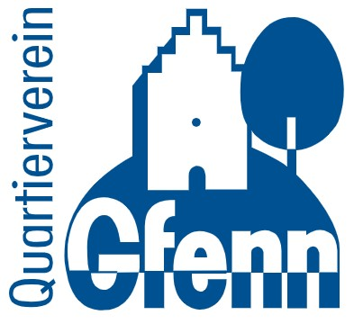

<meta charset="UTF-8"><meta name="viewport" content="width=device-width, initial-scale=1.0">
<title></title>
<style type="text/css">body {
      font-family: Arial, sans-serif;
      line-height: 1.6;
      margin: 0;
      padding: 0;
      background-color: #f5f7fa;
      color: #333;
    }
    header {
      background-color: #2c7a7b;
      color: #fff;
      padding: 2rem 1rem;
      text-align: center;
    }
    header h1 {
      margin: 0;
      font-size: 2rem;
    }
    main {
      max-width: 900px;
      margin: 2rem auto;
      padding: 1.5rem;
      background: #fff;
      border-radius: 8px;
      box-shadow: 0 4px 10px rgba(0,0,0,0.1);
    }
    h2 {
      color: #2c7a7b;
      margin-top: 1.5rem;
    }
    ul, ol {
      margin: 0.5rem 0 1.5rem 1.2rem;
    }
    .highlight {
      background: #e6fffa;
      border-left: 4px solid #2c7a7b;
      padding: 1rem;
      margin: 1.5rem 0;
      border-radius: 4px;
      font-weight: bold;
    }
    .team {
      background: #f0f4f8;
      padding: 1.5rem;
      margin-top: 2rem;
      border-radius: 8px;
    }
    .team h2 {
      margin-top: 0;
    }
    footer {
      text-align: center;
      font-size: 0.9rem;
      color: #666;
      padding: 1rem;
    }
</style>
<main>


<p>Herzlich willkommen auf der Plattform des Projekts <b>Colouring Dübendorf</b>. Sie erhalten hier einen Überblick über die aktuellen Energiedaten und Gebäudestrukturen in Gfenn sowie Zugang zu einer Umfrage, mit der wir relevante Fragen stellen, um die Energieplanung für das Quartier zu unterstützen und gemeinsam neue Einsichten zu gewinnen.</p>

<h2>Was ist das Ziel des Projekts?</h2>

<ul>
	<li><strong>Bestehende Daten sichtbar machen</strong> (z. B. Gebäudeinformationen, Energieverbrauch).</li>
	<li><strong>Ihre Erfahrungen und Kenntnisse erfassen</strong> – über <a href="https://survey123.arcgis.com/share/14f5c8714fee412380e7fbe3b7088c4c" target="_blank" rel="noopener noreferrer"><b>eine kurze Umfrage</b></a> (siehe Abschnitt "Teilen Sie Ihre Angaben") können Sie uns mitteilen, ob die öffentlichen Daten korrekt sind und weitere wichtige Informationen ergänzen.</li>
	<li><strong>Zukunftsszenarien visualisieren</strong> – wie könnte sich das Quartier entwickeln, wenn mehr erneuerbare Energie, Gebäudesanierungen oder neue Technologien umgesetzt werden?</li>
</ul>

<h2>Warum sollten Sie teilnehmen?</h2>

<ul>
	<li>Nur Sie wissen, ob die vorhandenen Daten wirklich mit der Realität übereinstimmen.</li>
	<li>Mit Ihren Angaben können wir die Qualität der Analysen verbessern.</li>
	<li>Gemeinsam schaffen wir eine solide Grundlage für Entscheidungen hin zu einem <strong>klimaneutralen und zukunftsfähigen Quartier</strong>.</li>
</ul>

<h2>Was finden Sie auf der Plattform?</h2>

<ol>
	<li><strong>Projektinformationen</strong> – Ziele, Hintergründe, Vorgehen.</li>
	<li><strong>Umfrage</strong> – Möglichkeit, Ihre Gebäudedaten und Zukunftspläne einzutragen.</li>
	<li><strong>Visualisierungen</strong> – interaktive Darstellungen der aktuellen Situation und möglicher Zukunftsbilder.</li>
</ol>

<div class="highlight">👉 Ihre Teilnahme macht den Unterschied!<br />
Füllen Sie die Umfrage aus und helfen Sie mit, Ihr Quartier aktiv mitzugestalten.</div>

<div class="team">
<h2>Projektteam</h2>

<p>Dieses Projekt wird entwickelt und betreut von:</p>

<ul>
	<li><a href="https://www.empa.ch/web/s313" target="_blank" rel="noopener noreferrer"><b>Urban Energy System Lab, Empa</b></a></li>
	<li><a href="https://www.duebendorf.ch/" target="_blank" rel="noopener noreferrer"><b>Stadt Dübendorf</b></a></li>
	<li><a href="https://www.gfenn.ch/" target="_blank" rel="noopener noreferrer"><b>Quartierverein Gfenn</b></a></li>
</ul>

<p>Wir danken allen Beteiligten für die Zusammenarbeit und Ihr Engagement!</p>
</div>

  <!-- Image Row -->
<div class="image-row" style="text-align: center;">
  
  
  
</div>

</main>

<footer>
<p>© 2025 Colouring Dübendorf – Alle Rechte vorbehalten.</p>
</footer>
